2023年11月去吃的😊 因为正值「第13届冲绳面集章活动（2023.10.1～2024.2.29）」期间，本来想去参加店家吃，但运气不好，去的两间都临时休息，所以虽然不是集章活动的对象店家，还是决定来这间之前就一直很好奇的店吃。
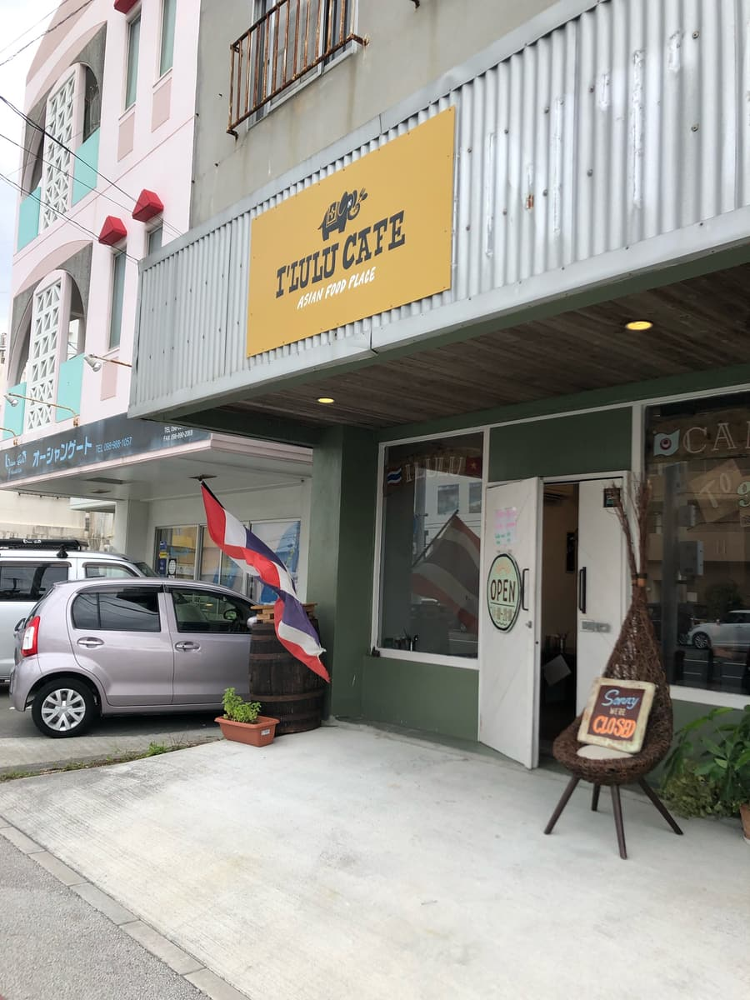
这间店，我每次经过58号都会看到，但很在意的是停车场。原本以为店门口前面可以停几台车，但这次仔细一看，好像很难停。
正在想「怎么办」的时候，发现稍微有点距离的地方，有个看起来像停车场的地方。
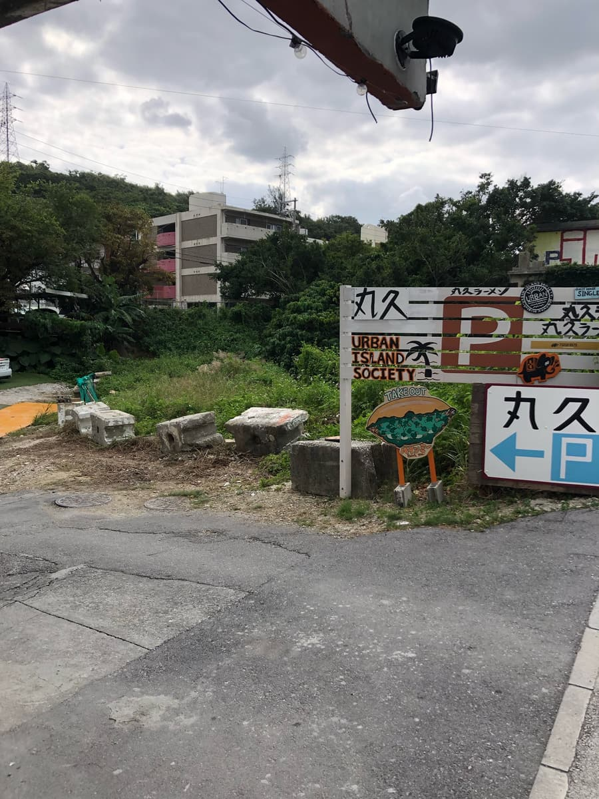
入口的看板上有好几间店的招牌，仔细一看，土黄色底的小招牌上也有「I' LULUCAFE」的名字🤗
不过，这次进去的时段刚好是中午，停车位大概只有5台左右，加上是好几间店共用的停车场，所以是满位的状态。（隔壁的拉面店好像也很受欢迎）
不过，等了一下停车场就有空位，总算停好车了。
进到店里，点了「泰式冲绳面」。等待的时候检查一下菜单😊
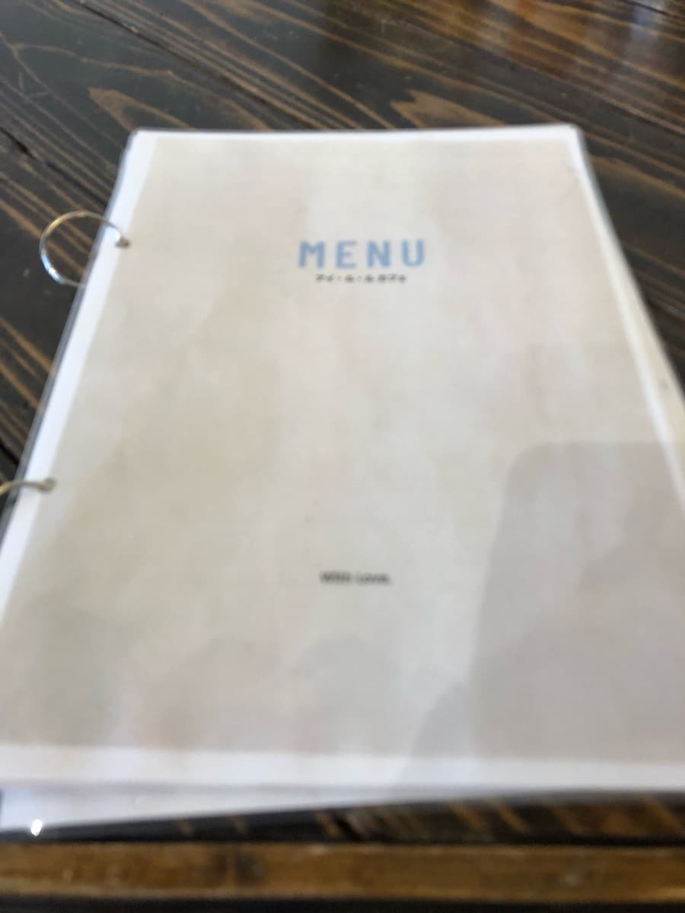
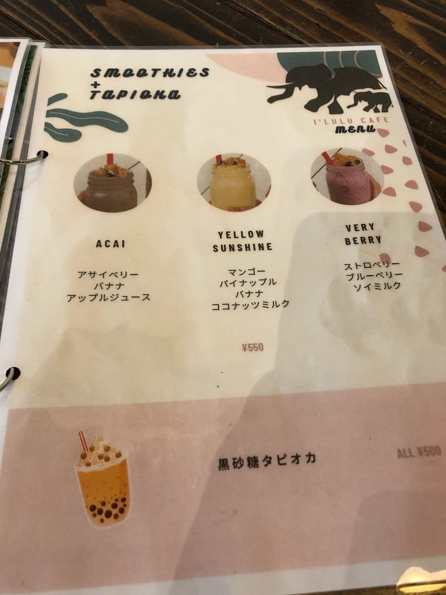
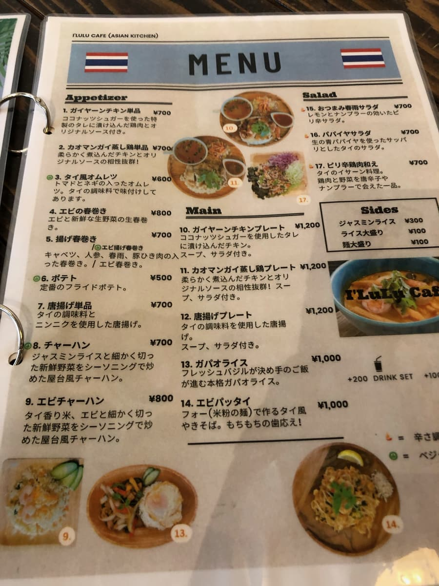
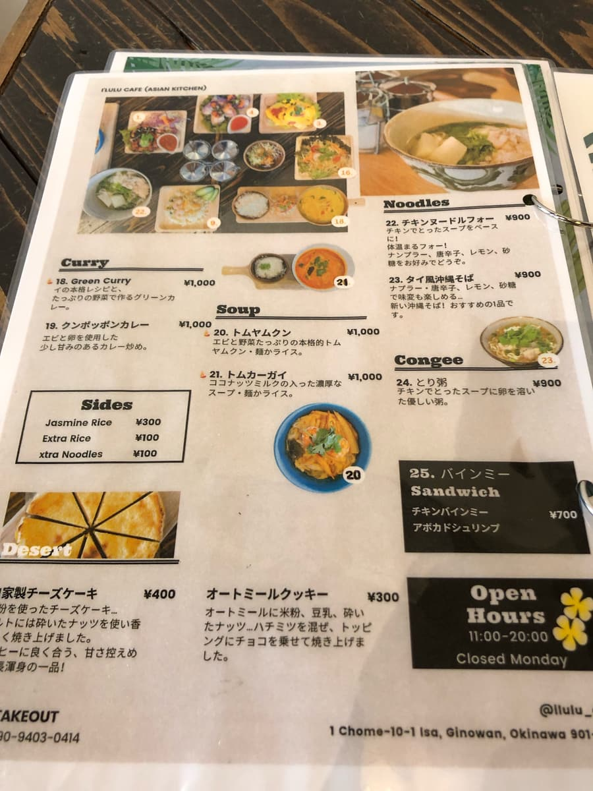
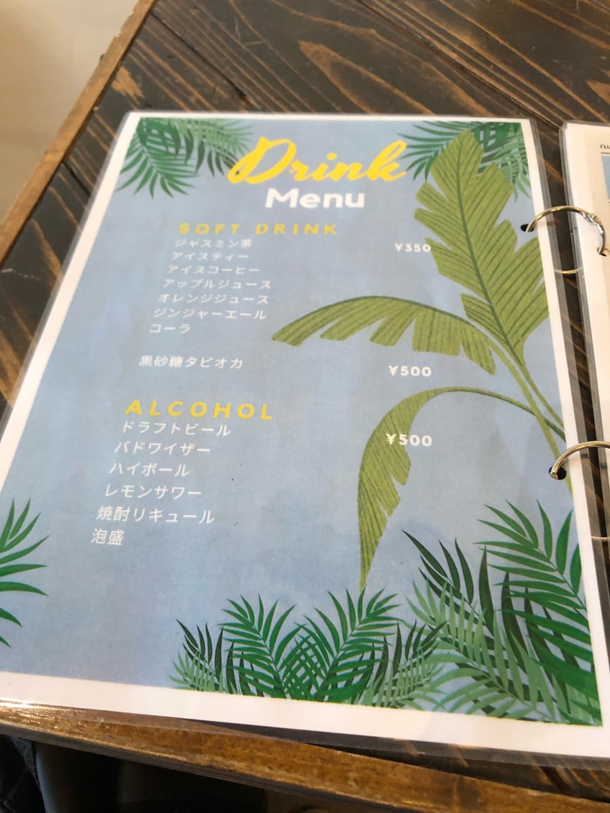
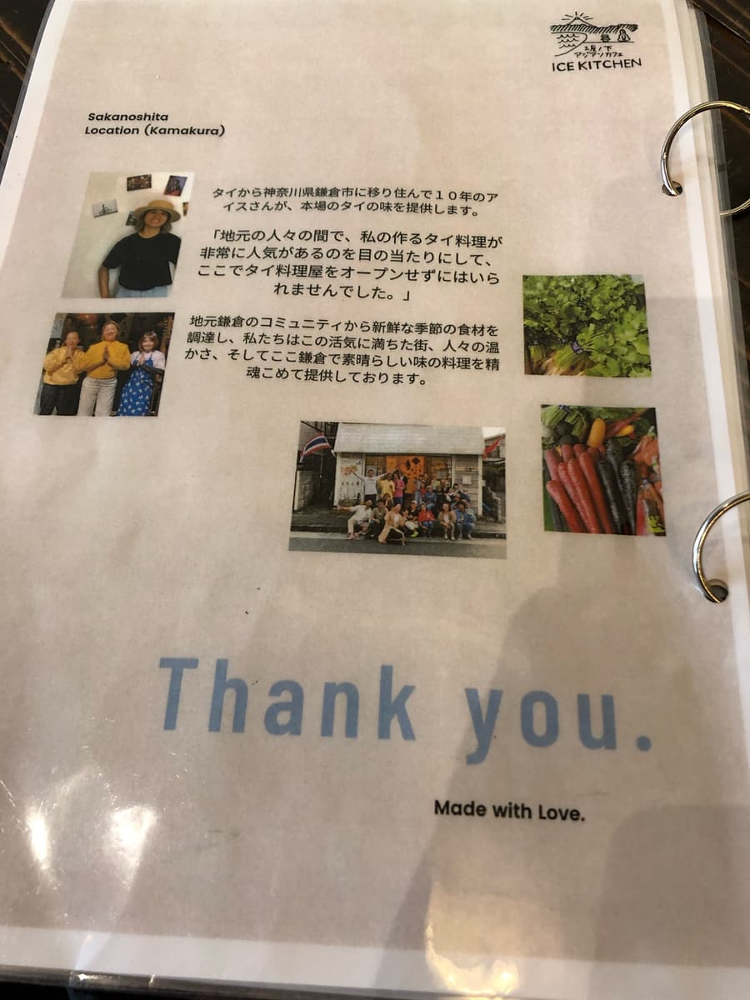
看完菜单环顾店内，发现有个可以通往隔壁房间的入口。
进去看看，好像是原创品牌之类的，也有在卖衣服。很时髦的感觉🤗
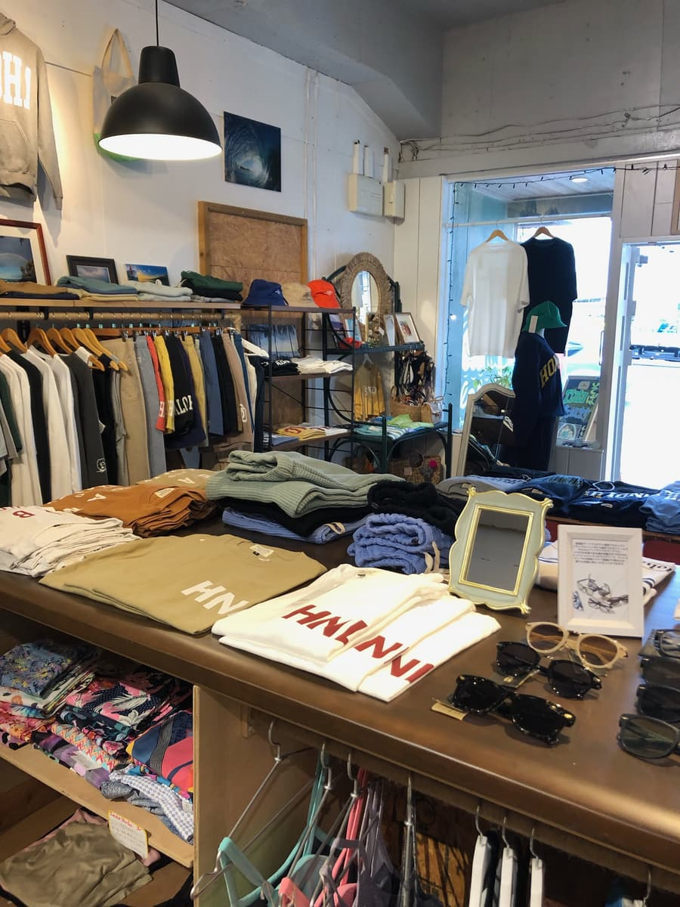
过了一会儿，「泰式冲绳面」来了😁
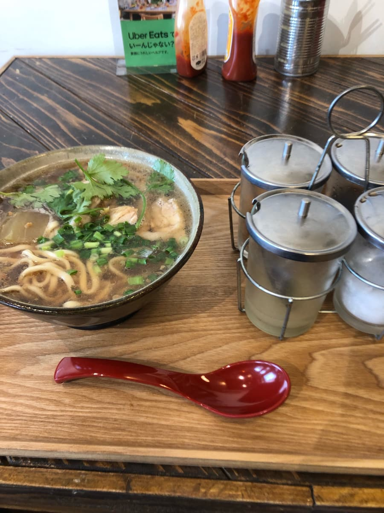
面旁边不知道为什么摆了各种调味料。店员说明说，有柠檬汁、砂糖、辣椒、鱼露，请依照个人喜好加入。这是泰国料理的调味料呢，这是其他店没有的全新冲绳面ｗｗ
首先想品尝原本的汤头，所以什么都不加，先喝一口汤。
「？」跟至今为止的冲绳面汤头完全不一样。是至今从来没喝过的味道。
这间店，我是在报纸上看到介绍才知道的，确认了拍下来的报纸报导，发现不是一般冲绳面高汤常用的经典柴鱼、猪高汤，而是像用在一种叫「河粉」的料理的汤头，是鸡高汤。是跟至今的冲绳面不同的全新汤头呢。
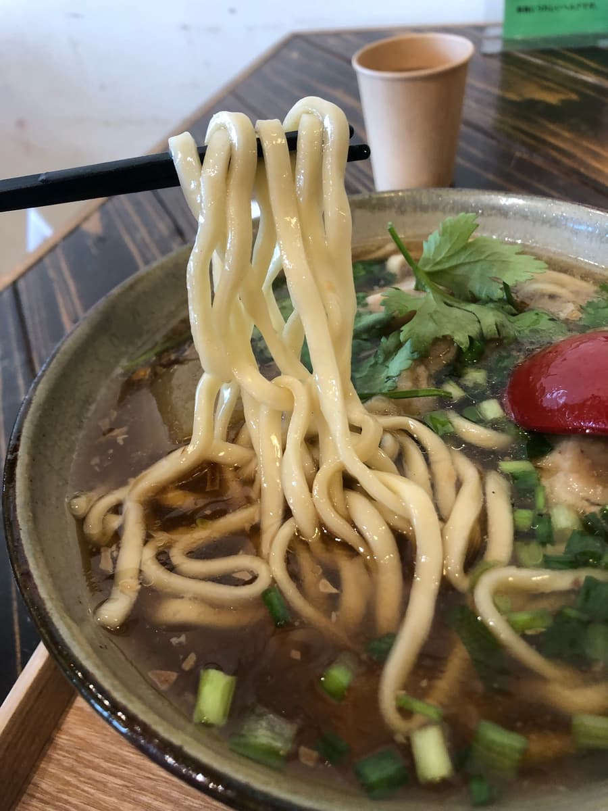
接着吃面。是粗直面，偏软的面条。配料是冬瓜，很入味又软嫩。之前介绍过的宇流麻市「冲绳面木瓜与冬瓜」也是用冬瓜当配料，让我想起来了。
肉不是猪肉而是鸡腿肉，很软嫩。也有加香菜，这应该是我第一次吃(;^ω^)，我想这是喜好很两极的食材，但没有特别感觉到强烈的味道或气味，很正常地吃下去了笑 我是味觉白痴笑
吃到一半加入泰国料理的调味料（柠檬汁、鱼露、辣椒）来变换口味。柠檬汁和鱼露可能加太少了，没什么感觉到变化。不过辣椒可能加太多了，从途中开始就变成一边狂流汗一边吃了(;^ω^) 好辣。
评分（9分/15分）：是全新的冲绳面。熟悉的冲绳面变成泰国料理了呢😊 大家要不要也来体验一次这里的冲绳面呢。
面：★★★☆☆（3）
汤头：★★★☆☆（3）
配料：★★★☆☆（3）